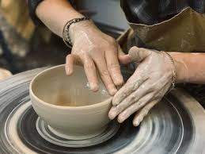

Trang giới thiệu các sản phẩm thủ công nổi bật: gốm sứ, mây tre đan, sơn mài... Thủ công mỹ nghệ là một nhánh của ngành thủ công nghiệp chế tạo các đồ vật như đồ trang sức, đồ trang trí, đồ lưu niệm, đồ mỹ nghệ hoàn toàn bằng tay, không dùng máy móc. Cũng có thể hiểu thủ công mỹ nghệ là đồ thủ công (hand crafted). Những người làm đồ thủ công chuyên nghiệp và lành nghề được gọi là nghệ nhân thủ công. Thủ công mỹ nghệ có gốc rễ của nó trong hàng thủ công từ nông thôn bao gồm các nhu yếu phẩm, vật liệu và hàng hóa của các nền văn minh cổ đại. Một số hàng thủ công đã tồn tại trong nhiều thế kỷ, trong khi một số khác lại là các phát minh hiện đại, là sự phát triển đại trà của hàng thủ công mà ban đầu được sản xuất chỉ trong một khu vực địa lý hạn chế. Nhiều nghệ nhân làm hàng thủ công mỹ nghệ sử dụng vật liệu tự nhiên, thậm chí hoàn toàn bản địa, trong khi những nghệ nhân khác có thể dùng vật liệu phi truyền thống (hiện đại), và thậm chí tái sử dụng các vật liệu công nghiệp. Tay nghề thủ công cá nhân của một mặt hàng thủ công mỹ nghệ là tiêu chí tối quan trọng; những hàng hóa được sản xuất hàng loạt hay bằng máy không phải là hàng thủ công mỹ nghệ.
